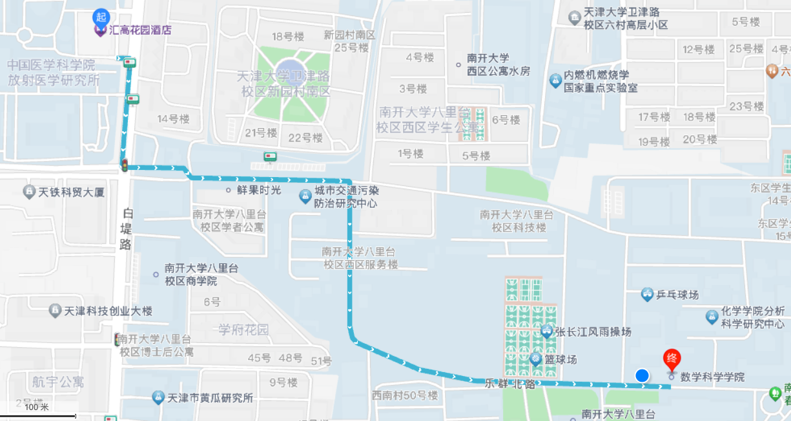
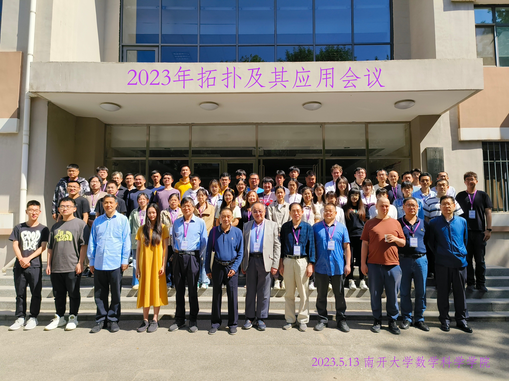

2023年拓扑及其应用会议
5月12-16日，南开大学
代数拓扑是数学中的一个重要分支，近年来有着长足发展。最近拓扑学在化学化合物、生物蛋白质、社交网络等领域的数据分析方面有着重要应用。
本次会议旨在推动应用拓扑学的发展，增进国内拓扑学及拓扑数据分析等方向的学者进行学术交流。本次会议不收取参会费，参会者需自行承担住宿和差旅费用。
住宿地点：天津汇高花园酒店（天津市南开区白堤路236号增1号）。
会议地点：南开大学数学科学学院（天津市南开区卫津路94号）；天津汇高花园酒店。
会议日程
本次会议的报到日期为2023年5月12日。报告安排在5月13日至15日。5月16日上午为自由交流时间，下午离会。
详细时间安排请参见：会议日程。 本次会议的详细报告内容请参见：会议报告。
报告人（按姓氏字母顺序）
- Matthew Burfitt (BIMSA)
- Sergei Ivanov (BIMSA)
- 白杨 (南开大学)
- 毕婉莹 (河北师范大学，BIMSA)
- 范飞飞 (华南师范大学)
- 高亚茹 (大连理工大学)
- 古星 (西湖大学)
- 黄瑞芝 (中科院数学与系统科学研究院)
- 林小熙 (大连理工大学)
- 刘冉 (河北师范大学，BIMSA)
- 刘祥 (南开大学)
- 吴杰 (BIMSA)
- 杨聚鑫 (河北师范大学，BIMSA)
- 查家熙 (南开大学)
- 张丛磊 (河北师范大学)
- 张蒙蒙 (河北师范大学，BIMSA)
- 张宇 (南开大学)
- 张枝磊 (南开大学)
- 祝欣然 (南开大学)
学术委员会
- 吴 杰 北京雁栖湖应用数学研究院(BIMSA)
- 雷逢春 大连理工大学数学院
- 王向军 南开大学数学院
- 刘秀贵 南开大学数学院
- 王彦英 河北师范大学数学院
组织委员会
- 刘秀贵 南开大学数学院
- 李京艳 北京雁栖湖应用数学研究院(BIMSA)
- 李风玲 大连理工大学数学院
- 黄瑞芝 中国科学院数学与系统科学研究院
- 张 宇 南开大学数学院
联系人
- 刘秀贵， xgliu@nankai.edu.cn
- 张 宇， zhang.4841@buckeyemail.osu.edu
路线及地图
从天津汇高花园酒店步行至南开大学数学科学学院（约需17分钟）：

1. 从起点出发 向东 步行17米
2. 右转 沿白堤路 向南 步行139米
3. 左转 沿大学道 向东 步行53米
4. 沿励学路 向东 步行244米
5. 右转 沿乐群北路 向东南 步行617米，到达终点
合影
